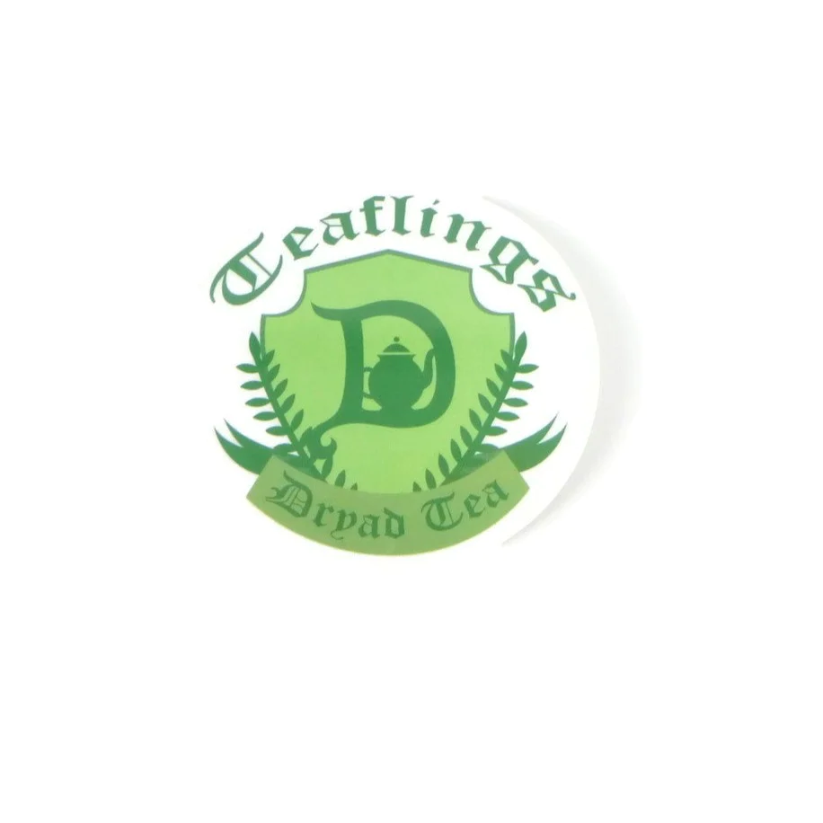

The Java Hobbit came about as the brainchild of Kristin Bailey. Originally looking for a way to maintain connections with friends during the pandemic
while also allowing everyone to enjoy their favorite beverages and pastries in a safe manner. The idea of being able to order them online and have them
delivered was born. As restrictions have been lifted it's become possible to pick up orders directly from the Java Hobbit location itself as well.
As a Colorado locally owned and operated company, Java Hobbit, prides itself on procuring locally produced coffees and teas. Boyers Coffee has been slow roasting
coffee in Colorado since 1965 and doing an amazing job! They have several great blends which Java Hobbit uses for their favorite java drinks. Our teas are handpicked
from the very extensive collection offered at Dryad Tea. Their teas are custom designed and created by some very magical fae. If you haven't checked out their site, we
highly recommend you do! They not only have all their amazing teas but also craft splendid pottery as well.
